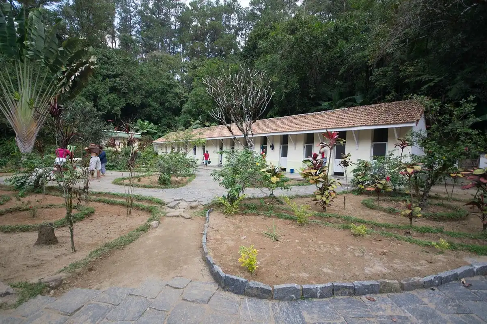

Ranomafana literally translates to “hot water” – a name truly befitting the town. Ranomafana is located above ancient geothermal vents which still produce geothermal energy. That geothermal energy is used to heat fresh water near the surface of the earth – as opposed to pumping up hot water from far below. One benefit of this system is that the water you swim in has none of the sulfur smell typically associated with hot springs! Overall, this geothermal activity in Ranomafana manifests as a public swimming pool, hot spring baths, and private hot tubs that locals as well as tourists enjoy.
The public pool is located just across the Namorana river from the football/soccer field, no more than a 20-minute walk from any hotel in town. Admission is 5 000 MGA for international visitors and 1 000 MGA for Malagasy visitors. Everyone is required to wear a swim cap, which are available to purchase at the entrance for 1 000 - 3 000, but otherwise all levels of modesty are welcome (bikinis, speedos, one pieces – anything goes). The cost of admission covers your swim in the pool for the day, thermal showers to rinse off after, changing rooms, and a bathroom - but be sure to bring your own towel! Construction is underway (as of 2023) to create a small restaurant on the lawn adjacent to pool grounds, as the grassy riverside stretch is a popular place for picnics, parties, and relaxation after a splash. Please note, drinking and eating in the immediate pool area is not allowed and neither are animals. While you swim your bags are stored in open shelving within eyesight of the pool and while crime is minimal in Ranomafana, on busy days be aware of where your belongings are and consider leaving valuables in your hotel. The pool is open 6:00am-5:00pm and 7:00pm-9:00pm daily, except for Wednesday when it is closed all day for a drain and deep cleaning.
 If the public pool is not to your taste, there are several private options that may appeal instead. At the same ticket booth for the public pool, you will find the option for private baths. This entails a private room with a tiled bathtub connected to a thermal water spigot and a cold water spigot. Your purchase of a ticket (again 5 000 MGA for international visitors and 1 000 MGA for Malagasy visitors) will grant you access to one bath room for one hour. Multiple people are welcome in one room at once so long as they each purchase their own ticket. When considering this bathing option, please note you will be expected to bring your own towels and any soap you want to use as nothing is provided aside from hot and cold water. After your hour is up, the hot tub and room get thoroughly cleaned before the next visitor. The private baths have a room reserved for massages that can be booked at the ticket counter. Prices vary on type of massage and length. The baths are open 6:00am-5:00pm daily, and are closed Wednesday for deep cleaning.
For the more adventurous groups and individuals, you might consider taking a kayaking trip down the Namorana river! Trips can be arranged through Varibolo Kayaking, who have a physical shop near the entrance to the national park and can also be reached at +1 516 479 1889, +261 034 90 823 03, and info@varibolo.com. No matter if you contact them in person or online/phone, they can assist you with setting up a time for your excursion. Prices are 60 000 MGA per person, and the whole trip can be expected to take about two hours. They will confirm, but typically you will meet Varibolo staff at the little island at the middle of the river to the thermal pool/baths, where they will provide you with general instruction and of course the kayak itself. Along your way down the river (which loosely follows National Route 25), you might encounter people panning for gold, and have the ability to stop at a toaka gasy (local moonshine) “distillery”.
While Varibolo has been operating successfully and smoothly for a number of years, a couple facts are important to note before you take the trip. The first being that you will not be accompanied by a guide – you're on your own! The second is that there is no clear end to the trip; once you feel like you’re done you simply exit the river, deflate your kayak, and flag down a local taxi brousse on the side of the road to take you back to town. This might be difficult for those not quite used to getting a brousse but it should not discourage you! Finally, while no rapids can be considered difficult or dangerous, you can expect to get wet.
The Ranomafana Arboretum was founded in 1991 by Dan Turk. It is located just 4 km east of Ranomafana on National Route 25 - a two minute drive or a short and easy 20 minute walk from town. It houses over 50 species of trees, some native to the southeast of Madagascar and some brought to the island through international trade centuries ago. It is also home to lowland-streaked tenrecs, chameleons, butterflies, frogs, and all sorts of interesting insects.
Once you arrive at the arboretum, you will pass a ticket booth. Tickets for non-Malagasy guests are 10 000 MGA per person. You will be given a guide who speaks English, French and Malagasy, and then begin a small loop of the grounds. Expect the tour to take upwards of 1 hour, and be prepared to feed a giant Parson’s chameleon an insect snack!
The arboretum is a hidden gem of Ranomafana. It offers stunning views of the valley, interesting fruits to try, and a fascinating history of trees in the region. It also houses one young baobab tree. Make sure to visit this special place.
Centre ValBio is an American research station founded in 2003 by primatologist Dr. Patricia Wright. Today it is functionally run by a team of Malagasy and American full-time researchers and staff. They regularly host talks about ongoing research, trainings for future researchers, and tours of their facility near the entrance to the national park.
More information on their work and how to visit can be found at their website here:
Home | Centre ValBio (stonybrook.edu)
If you've done the national park and are now looking for a smaller hike close to town, fear not! The area around Ranomafana holds plenty of lovely trails to stroll on. One popular option for locals is a short hike to the biggest waterfall the Namorana river boasts. This waterfall is not visible from the road and is located about an hour walk up the river from town. You start your journey at the public swimming pool (piscine) and from there continue on the main path past the pool up the river. This hike takes you through a small town, along thin dirt paths, and through some rice paddies – don't worry, you're on the right track! You should be able to see the large waterfall in the distance about halfway into the hike. If at any point you feel you are going the wrong direction, asking a passerby for directions to the “cascade” will be sure to set you straight.